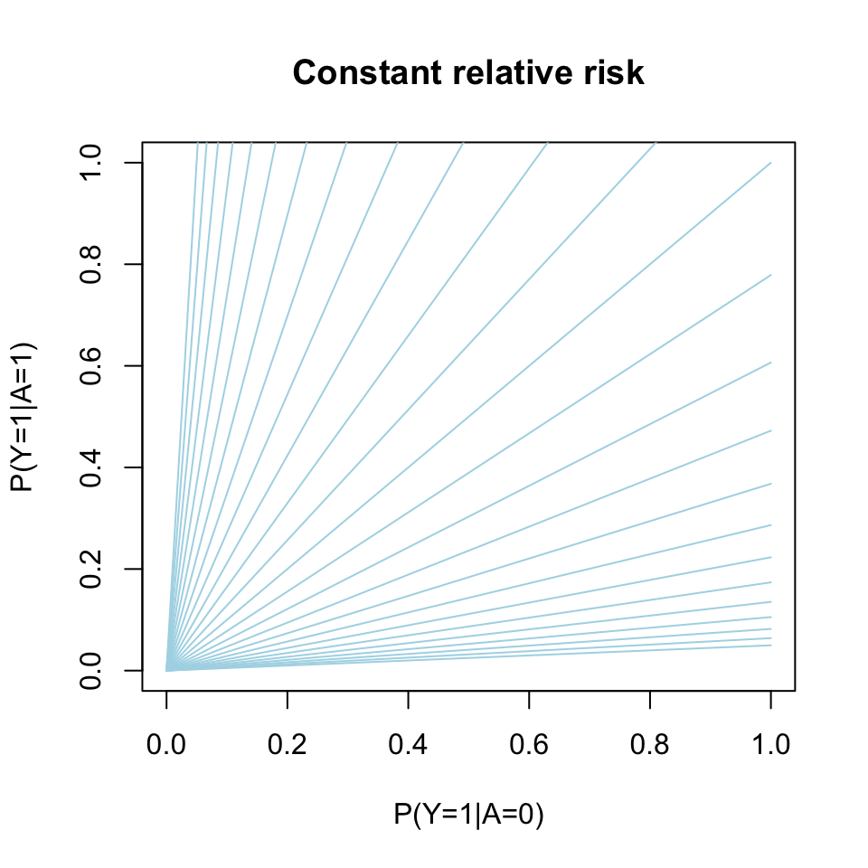

Estimating a relative risk or risk difference with a binary exposure
Klaus Kähler Holst
2025-11-05
Source:vignettes/riskregression.Rmd
riskregression.RmdIntroduction
Let be a binary response, a binary exposure, and a vector of covariates.

In a common setting, the main interest lies in quantifying the treatment effect, , of on adjusting for the set of covariates, and often a standard approach is to use a Generalized Linear Model (GLM):
with link function , and , known vector functions of .
The canonical link (logit) leads to nice computational properties (logistic regression) and parameters with an odds-ratio interpretation. But ORs are not collapsible even under randomization. For example
When marginalizing we leave the class of logistic regression. This non-collapsibility makes it hard to interpret odds-ratios and to compare results from different studies
Relative risks (and risk differences) are collapsible and generally considered easier to interpret than odds-ratios. Richardson et al (JASA, 2017) proposed a regression model for a binary exposures which solves the computational problems and need for parameter contraints that are associated with using for example binomial regression with a log-link function (or identify link for the risk difference) to obtain such parameter estimates. In the following we consider the relative risk as the target parameter
Let , the idea is then to posit a linear model for , i.e.,
and a nuisance model for the odds-product
noting that these two parameters are variation independent as illustrated by the below L’Abbé plot.
p0 <- seq(0,1,length.out=100)
p1 <- function(p0,op) 1/(1+(op*(1-p0)/p0)^-1)
plot(0, type="n", xlim=c(0,1), ylim=c(0,1),
xlab="P(Y=1|A=0)", ylab="P(Y=1|A=1)", main="Constant odds product")
for (op in exp(seq(-6,6,by=.25))) lines(p0,p1(p0,op), col="lightblue")
p0 <- seq(0,1,length.out=100)
p1 <- function(p0,rr) rr*p0
plot(0, type="n", xlim=c(0,1), ylim=c(0,1),
xlab="P(Y=1|A=0)", ylab="P(Y=1|A=1)", main="Constant relative risk")
for (rr in exp(seq(-3,3,by=.25))) lines(p0,p1(p0,rr), col="lightblue")
Similarly, a model can be constructed for the risk-difference on the following scale
Simulation
First the targeted package is loaded
This automatically imports lava (CRAN) which we can use to simulate from the Relative-Risk Odds-Product (RR-OP) model.
m <- lava::lvm(a ~ x,
lp.target ~ 1,
lp.nuisance ~ x+z)
m <- lava::binomial.rr(m, response="y", exposure="a", target.model="lp.target", nuisance.model="lp.nuisance")The lvm call first defines the linear predictor for the
exposure to be of the form
and the linear predictors for the /target parameter/ (relative risk) and the /nuisance parameter/ (odds product) to be of the form
The covariates are by default assumed to be independent and standard
normal
,
but their distribution can easily be altered using the
lava::distribution method.
The binomial.rr function
args(lava::binomial.rr)
#> function (x, response, exposure, target.model, nuisance.model,
#> exposure.model = binomial.lvm(), ...)
#> NULLthen defines the link functions, i.e.,
with .
The risk-difference model with the RD parameter modeled on the
scale can be defined similarly using the binomial.rd
method
args(lava::binomial.rd)
#> function (x, response, exposure, target.model, nuisance.model,
#> exposure.model = binomial.lvm(), ...)
#> NULLWe can inspect the parameter names of the modeled
coef(m)
#> m1 m2 m3 p1 p2
#> "a" "lp.target" "lp.nuisance" "a~x" "lp.nuisance~x"
#> p3 p4
#> "lp.nuisance~z" "a~~a"Here the intercepts of the model are simply given the same name as
the variables, such that
becomes a, and the other regression coefficients are
labeled using the “~”-formula notation, e.g.,
becomes a~x.
Intercepts are by default set to zero and regression parameters set
to one in the simulation. Hence to simulate from the model with
, we define the
parameter vector p given by
p <- c('a'=-1, 'lp.target'=1, 'lp.nuisance'=-1, 'a~x'=2)and then simulate from the model using the sim
method
d <- lava::sim(m, 1e4, p=p, seed=1)
head(d)
#> a x lp.target lp.nuisance z y
#> 1 0 -0.6264538 1 -2.4307854 -0.8043316 0
#> 2 0 0.1836433 1 -1.8728823 -1.0565257 0
#> 3 0 -0.8356286 1 -2.8710244 -1.0353958 0
#> 4 1 1.5952808 1 -0.5902796 -1.1855604 1
#> 5 0 0.3295078 1 -1.1709317 -0.5004395 1
#> 6 0 -0.8204684 1 -2.3454571 -0.5249887 0Notice, that in this simulated data the target
parameter
has been set to lp.target = 1.
Estimation
MLE
We start by fitting the model using the maximum likelihood estimator.
args(riskreg_mle)
#> function (y, a, x1, x2 = x1, weights = rep(1, length(y)), std.err = TRUE,
#> type = "rr", start = NULL, control = list(), ...)
#> NULLThe riskreg_mle function takes vectors/matrices as input
arguments with the response y, exposure a,
target parameter design matrix x1 (i.e., the matrix
at the start of this text), and the nuisance model design matrix
x2 (odds product).
We first consider the case of a correctly specified model, hence we
do not consider any interactions with the exposure for the odds product
and simply let x1 be a vector of ones, whereas the design
matrix for the log-odds-product depends on both
and
x1 <- model.matrix(~1, d)
x2 <- model.matrix(~x+z, d)
fit1 <- with(d, riskreg_mle(y, a, x1, x2, type="rr"))
fit1
#> Estimate Std.Err 2.5% 97.5% P-value
#> (Intercept) 0.9512 0.03319 0.8862 1.0163 1.204e-180
#> odds-product:(Intercept) -1.0610 0.05199 -1.1629 -0.9591 1.377e-92
#> odds-product:x 1.0330 0.05944 0.9165 1.1495 1.230e-67
#> odds-product:z 1.0421 0.05285 0.9386 1.1457 1.523e-86The parameters are presented in the same order as the columns of
x1and x2, hence the target parameter estimate
is in the first row
estimate(fit1, keep=1)
#> Estimate Std.Err 2.5% 97.5% P-value
#> (Intercept) 0.9512 0.03336 0.8858 1.017 7.159e-179DRE
We next fit the model using a double robust estimator (DRE) which introduces a model for the exposure (propensity model). The double-robustness stems from the fact that the this estimator remains consistent in the union model where either the odds-product model or the propensity model is correctly specified. With both models correctly specified the estimator is efficient.
with(d, riskreg_fit(y, a, target=x1, nuisance=x2, propensity=x2, type="rr"))
#> Estimate Std.Err 2.5% 97.5% P-value
#> (Intercept) 0.9372 0.0339 0.8708 1.004 3.004e-168The usual /formula/-syntax can be applied using the
riskreg function. Here we illustrate the double-robustness
by using a wrong propensity model but a correct nuisance
paramter (odds-product) model:
riskreg(y~a, nuisance=~x+z, propensity=~z, data=d, type="rr")
#> Estimate Std.Err 2.5% 97.5% P-value
#> (Intercept) 0.9511 0.03333 0.8857 1.016 4.547e-179Or vice-versa
riskreg(y~a, nuisance=~z, propensity=~x+z, data=d, type="rr")
#> Estimate Std.Err 2.5% 97.5% P-value
#> (Intercept) 0.9404 0.03727 0.8673 1.013 1.736e-140whereas the MLE in this case yields a biased estimate of the relative risk:
fit2 <- with(d, riskreg_mle(y, a, x1=model.matrix(~1,d), x2=model.matrix(~z, d)))
estimate(fit2, keep=1)
#> Estimate Std.Err 2.5% 97.5% P-value
#> (Intercept) 1.243 0.02778 1.189 1.298 0Interactions
The more general model where
for a subset
of the covariates can be estimated using the target
argument:
fit <- riskreg(y~a, target=~x, nuisance=~x+z, data=d)
fit
#> Estimate Std.Err 2.5% 97.5% P-value
#> (Intercept) 0.95267 0.03365 0.88673 1.01862 2.361e-176
#> x -0.01078 0.03804 -0.08534 0.06378 7.769e-01As expected we do not see any evidence of an effect of on the relative risk with the 95% confidence limits clearly overlapping zero.
Note, that when the propensity argument is omitted as
above, the same design matrix is used for both the odds-product model
and the propensity model.
Risk-difference
The syntax for fitting the risk-difference model is similar. To illustrate this we simulate some new data from this model
m2 <- lava::binomial.rd(m, response="y", exposure="a", target.model="lp.target", nuisance.model="lp.nuisance")
d2 <- lava::sim(m2, 1e4, p=p)And we can then fit the DRE with the syntax
riskreg(y~a, nuisance=~x+z, data=d2, type="rd")
#> Estimate Std.Err 2.5% 97.5% P-value
#> (Intercept) 1.027 0.02081 0.9857 1.067 0SessionInfo
sessionInfo()
#> R version 4.5.2 (2025-10-31)
#> Platform: x86_64-pc-linux-gnu
#> Running under: Ubuntu 24.04.3 LTS
#>
#> Matrix products: default
#> BLAS: /usr/lib/x86_64-linux-gnu/openblas-pthread/libblas.so.3
#> LAPACK: /usr/lib/x86_64-linux-gnu/openblas-pthread/libopenblasp-r0.3.26.so; LAPACK version 3.12.0
#>
#> locale:
#> [1] LC_CTYPE=C.UTF-8 LC_NUMERIC=C LC_TIME=C.UTF-8
#> [4] LC_COLLATE=C.UTF-8 LC_MONETARY=C.UTF-8 LC_MESSAGES=C.UTF-8
#> [7] LC_PAPER=C.UTF-8 LC_NAME=C LC_ADDRESS=C
#> [10] LC_TELEPHONE=C LC_MEASUREMENT=C.UTF-8 LC_IDENTIFICATION=C
#>
#> time zone: UTC
#> tzcode source: system (glibc)
#>
#> attached base packages:
#> [1] stats graphics grDevices utils datasets methods base
#>
#> other attached packages:
#> [1] targeted_0.7 lava_1.8.2
#>
#> loaded via a namespace (and not attached):
#> [1] Matrix_1.7-4 future.apply_1.20.0 jsonlite_2.0.0
#> [4] compiler_4.5.2 Rcpp_1.1.0 parallel_4.5.2
#> [7] jquerylib_0.1.4 globals_0.18.0 splines_4.5.2
#> [10] systemfonts_1.3.1 textshaping_1.0.4 yaml_2.3.10
#> [13] fastmap_1.2.0 lattice_0.22-7 R6_2.6.1
#> [16] knitr_1.50 htmlwidgets_1.6.4 future_1.67.0
#> [19] nloptr_2.2.1 desc_1.4.3 bslib_0.9.0
#> [22] rlang_1.1.6 cachem_1.1.0 xfun_0.54
#> [25] fs_1.6.6 sass_0.4.10 cli_3.6.5
#> [28] pkgdown_2.1.3 digest_0.6.37 grid_4.5.2
#> [31] mvtnorm_1.3-3 lifecycle_1.0.4 timereg_2.0.7
#> [34] pracma_2.4.6 evaluate_1.0.5 data.table_1.17.8
#> [37] numDeriv_2016.8-1.1 listenv_0.10.0 codetools_0.2-20
#> [40] ragg_1.5.0 survival_3.8-3 optimx_2025-4.9
#> [43] parallelly_1.45.1 rmarkdown_2.30 mets_1.3.8
#> [46] tools_4.5.2 htmltools_0.5.8.1